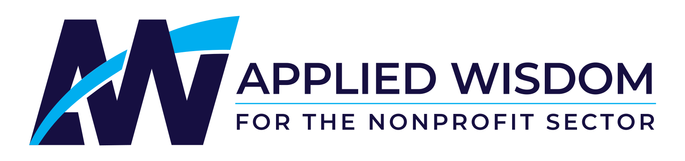
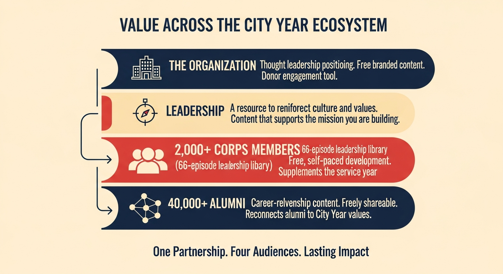
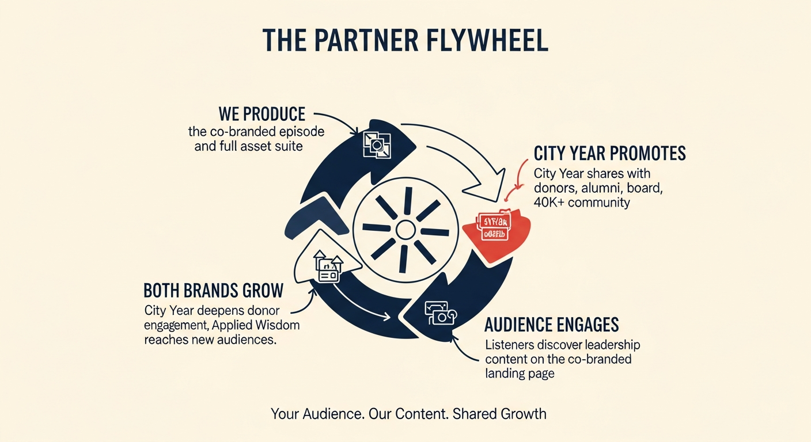
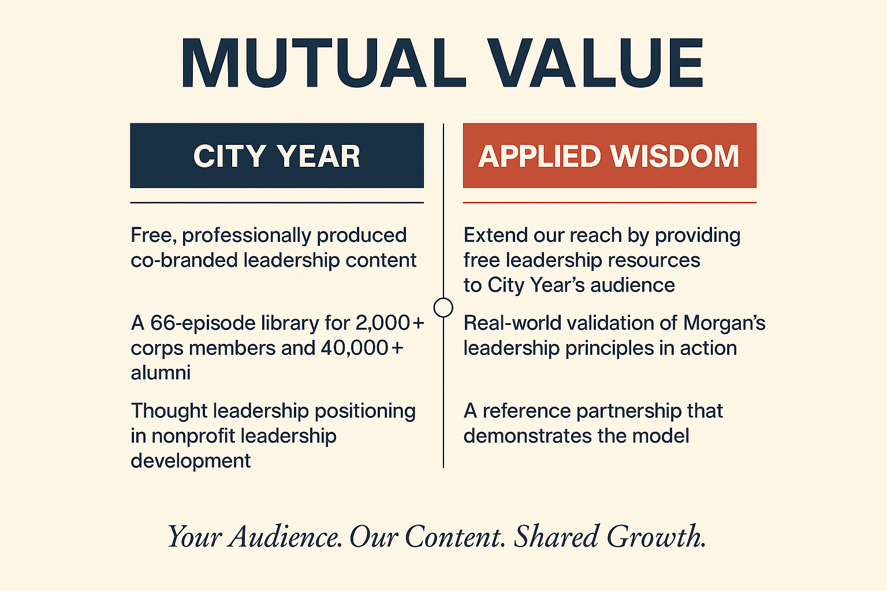
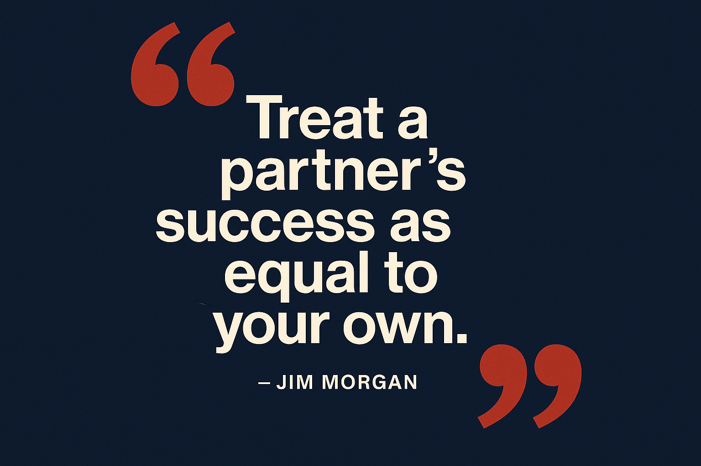
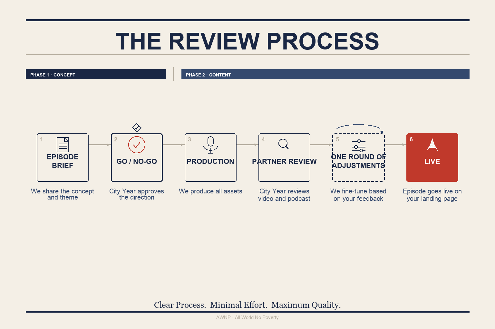
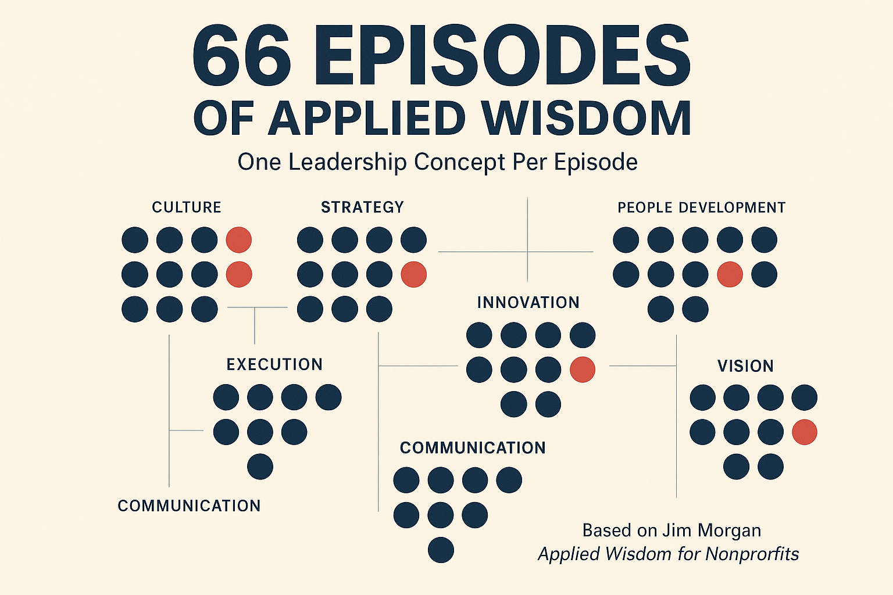
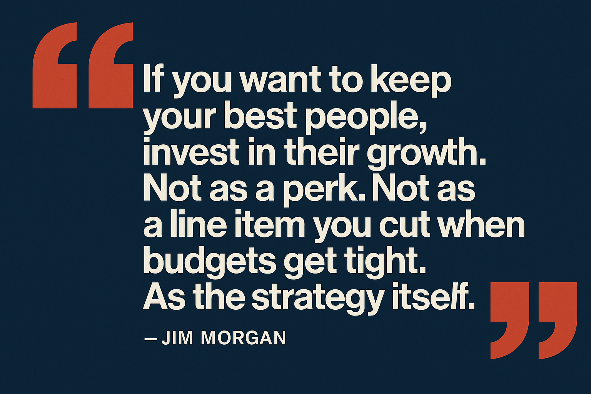

Partnership Overview
A Leadership Podcast Series for Corps Members, Alumni & Staff
Follow-up from our March 23, 2026 conversation
What We Discussed
We explored a collaboration centered on Applied Wisdom for Nonprofits, a 66-episode leadership podcast series from Jim Morgan's book. The framework maps directly onto what City Year already does: building leaders through service, developing people at every level, and treating culture as the core asset. Your staff are already using Applied Wisdom in weekly meetings, and we discussed the Wednesday Specialized Learning sessions and alumni newsletter as natural integration points.
We took an initial pass at five topics that felt relevant and walked through a co-branded demo. The real opportunity is for City Year to review the full 66 episodes and choose topics that resonate for each audience: corps members, alumni, or staff. The goal now is to get the right people aligned before moving into production.
Five Topics We Think Fit
Based on our understanding of City Year's model, we identified five topics from the 66-episode series that felt like natural fits. These are starting points. The real value is City Year choosing the topics that resonate most for each specific audience.
Episode 17 · Demo Available
If you want to keep your best people, invest in their growth. This episode explores how organizations that treat development as a core commitment, not a perk, build the strongest, most loyal teams. Direct mirror of City Year's model.
View the City Year demo →Episode
The ability to read a situation in real time and act on instinct sharpened by experience. Exactly what corps members build over a service year, and what separates great leaders from good ones.
Episode
How leaders align people around shared meaning, not just tasks. Particularly relevant for corps member orientation and for staff navigating large, mission-driven organizations.
Episode
The leadership philosophy that runs through City Year's DNA. This episode gives corps members and alumni a framework for what they already live, and language to carry it forward in any career.
Episode
How trust is built, maintained, and lost, and why it's the foundation of every high-performing team. Connects directly to the cohort dynamics corps members navigate every day in schools.
What Each Episode Includes
Every episode in the series comes with a full asset package, built for sharing, teaching, and discussion. Nothing requires additional production from City Year.
Each episode includes: a 1-2 minute video overview, a deep-dive podcast conversation, presentation slides, an infographic, a mind map, and a full transcript. It's a self-contained learning unit, ready to drop into Wednesday sessions, newsletters, or team meetings.


Three Audiences, One Series
Most organizations have one audience for professional development content. City Year has three, and all three are well-positioned to engage with this series in different ways.
Corps Members
Alumni Network
Staff

How It Works
Applied Wisdom handles all production. City Year gets a co-branded landing page with the full asset suite for each episode we produce together, plus access to the complete 66-episode Applied Wisdom podcast series for your corps members, alumni, and staff.
We start with one co-branded episode. Episode 17 is already built. If it lands well, we can produce additional co-branded episodes, potentially tailoring one to each of your key audiences. City Year shares the content through your existing channels. Your community gets leadership content connected to your brand.



The Review Process
Every episode follows the same clear process. City Year's input shapes the brief, and the brief drives everything else.

Applied Wisdom Reach
The series covers the full arc of nonprofit leadership: from building culture to making decisions under pressure, from purposing a team to managing through uncertainty. Each episode stands alone; together they form a comprehensive leadership curriculum.


Explore
The full series index and the City Year–specific Episode 17 demo are both ready to browse.
Full Series
Browse the complete Applied Wisdom series: 3 seasons, ~22 hours, covering the full range of nonprofit leadership.
Browse the series →Episode 17 · City Year Demo
The co-branded City Year episode, complete with video, podcast, slides, infographic, and transcript. Ready to explore.
View Episode 17 →Agreed Next Steps
From our conversation today, here's what we agreed to move forward on: